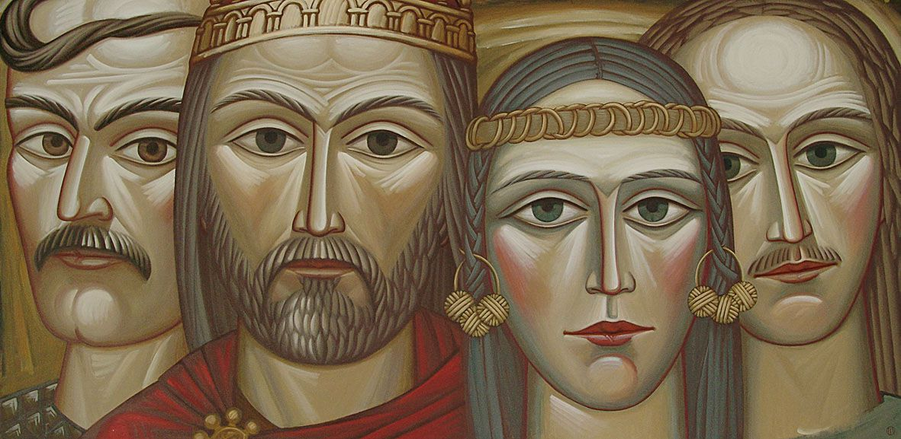

Кия зображено в профіль, він дивиться уперед, тримаючи в зігнутій у лікті руці довгий тонкий спис, Щек стоїть за ним з обличчям, поверненим у фас, тримаючи в лівій руці спис, а правою притискаючи до плеча сокиру, Хорив дивиться назад, тримаючи у витягнутій правій руці гнучкий лук. Постать Либеді розміщено на носі човна з піднятими, наче крила, руками. У ролі Либеді зображено доньку скульптора Бородая Галину. Вона була художницею та графіком, і померла від невиліковної хвороби у віці 31 року.
